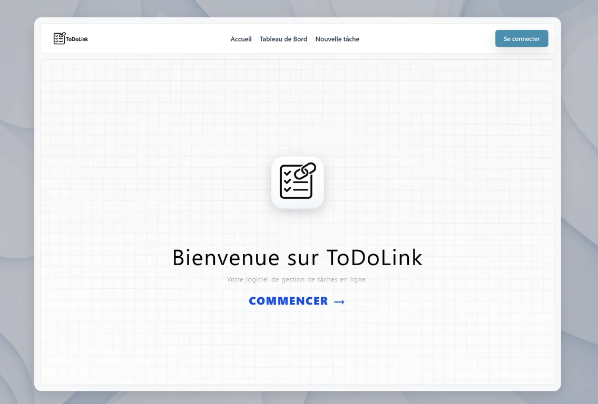
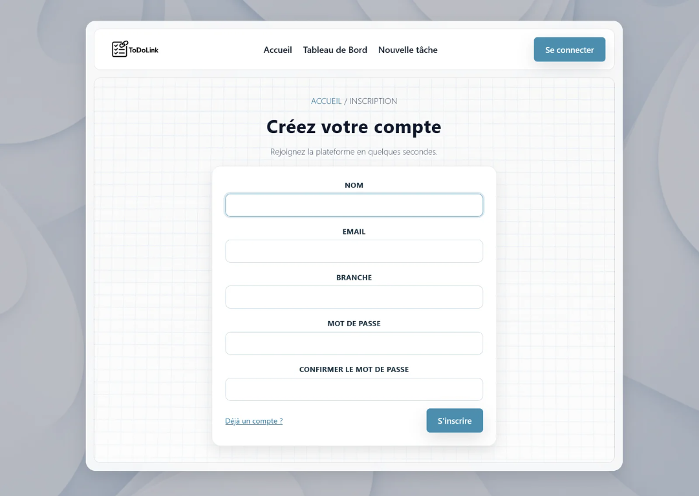
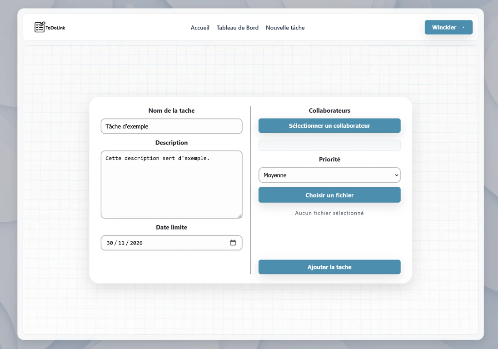
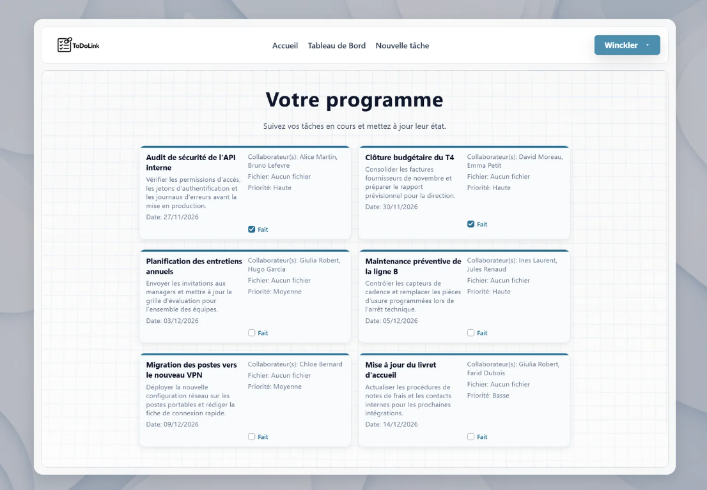

TodoLink
Une application Laravel conçue en groupe de trois pour créer, assigner et suivre des tâches. Elle réunit les priorités, les pièces jointes et la synchronisation avec un calendrier.
Mon rôle : j'ai participé aux différents volets du développement — interface, logique Laravel et intégration des fonctionnalités de gestion des tâches — selon les besoins du groupe.
- Laravel
- PHP
- Tailwind CSS
Présentation
Le suivi des tâches, de la création à l'échéance
TodoLink centralise l'organisation d'un programme de tâches. Les utilisateurs peuvent détailler le travail à effectuer, le confier à des collaborateurs et suivre les priorités et échéances depuis un tableau de bord.
Créer des tâches et préciser les actions à réaliser.
Assigner le travail à des collaborateurs.
Organiser les tâches avec des priorités et des échéances.
Joindre des fichiers et synchroniser les tâches au calendrier.
Aperçu de l'application
Quelques écrans de TodoLink







